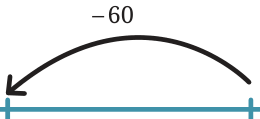
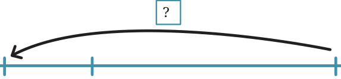
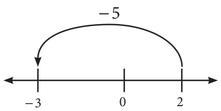

Just as you can do additions, subtractions and comparisons with small numbers using the number line above, you can also do them with large numbers by imagining an ‘infinite number line’ or drawing an ‘unmarked number line’ as follows:
This line shows only the position of zero. Other numbers are not marked. It can be convenient to use this unmarked number line to add and subtract integers. You can show, or simply imagine, the scale of the number line and the positions of numbers on it. For example, this unmarked number line (UNL) shows the addition problem: \(85 +\) ( \(- 60) =\) ?

0 +25 +85
We then can visualise that \(85 +\) ( \(- 60) = 25\)
The following UNL shows a subtraction problem which can also be written as a missing addend problem: ( \(- 100) - (+ 250) =\) ? or \(250 +\) ? \(= - 100\).

\(- 100 + 250\)
We can then visualise that ? \(= - 350\) in this problem. In this way, you can carry out addition and subtraction problems, with positive and negative numbers, on paper or in your head using an unmarked number line.
Use unmarked number lines to evaluate these expressions:
- a.\(- 125 +\) ( \(- 30) =\) _______ -

- b.\(+ 105 -\) ( \(- 55) =\) _______
- c.\(+ 80 -\) ( \(- 150) =\) _______
- d.\(- 99 -\) ( \(- 200) =\) _______
Converting subtraction to addition and addition to subtraction
Recall that Target Floor - Starting Floor = Movement needed
Target Floor = Starting Floor + Movement needed
If we start at 2 and wish to go to \(- 3\), what is the movement needed? First method: Looking at the number line, we see we need to move \(- 5\) (i.e., 5 in the backward direction). Therefore, \(- 3 - 2 = - 5\). The movement needed is \(- 5\). Second method: Break the journey from 2 to \(- 3\) into two parts.
- a.From 2 to 0, the movement is \(0 - 2 = - 2\).
- b.From 0 to \(- 3\), the movement is \(- 3 - 0 = - 3\).
The total movement is the sum of the two movements: \(- 3 +\) ( \(- 2) = - 5\). Look at the two coloured expressions. There is no subtraction in the second one! In this way, we can always convert subtraction to addition. The
number that is being subtracted can be replaced by its inverse and then added instead. Similarly, a number that is being added can be replaced by
its inverse and then subtracted. In this way, we can also always convert addition to subtraction.
Examples:
- a.\((+ 7) - (+ 5) = (+ 7) +\) ( \(- 5)\)
- b.( \(- 3) - (+ 8) =\) ( \(- 3) +\) ( \(- 8)\)
- c.\((+ 8) -\) ( \(- 2) = (+ 8) + (+ 2)\)
- d.\((+ 6) -\) ( \(- 9) = (+ 6) + (+ 9)\)